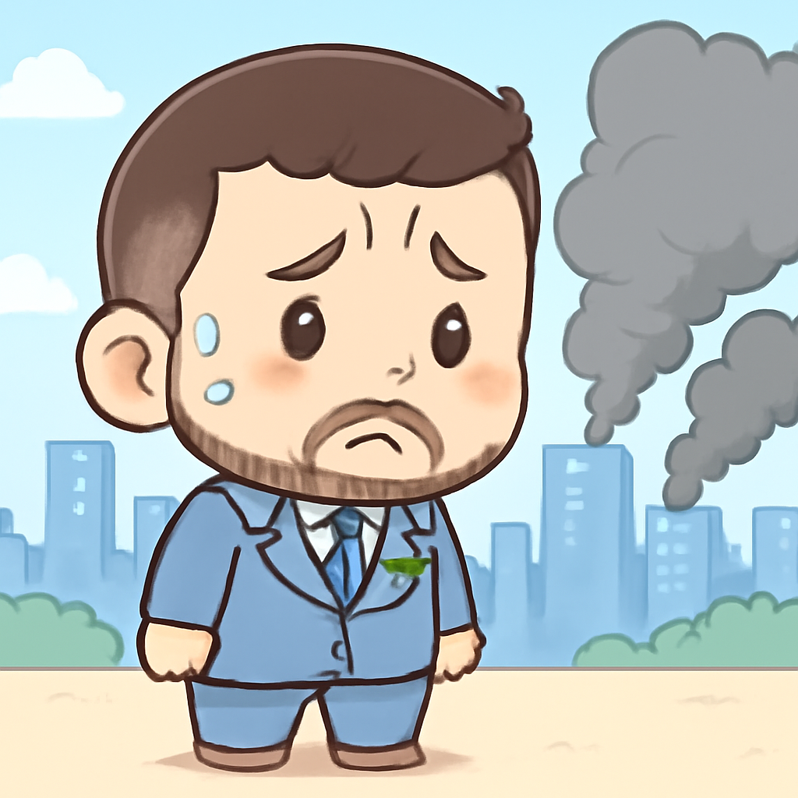
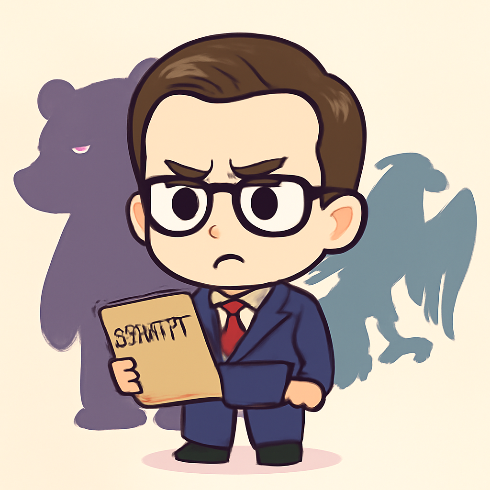
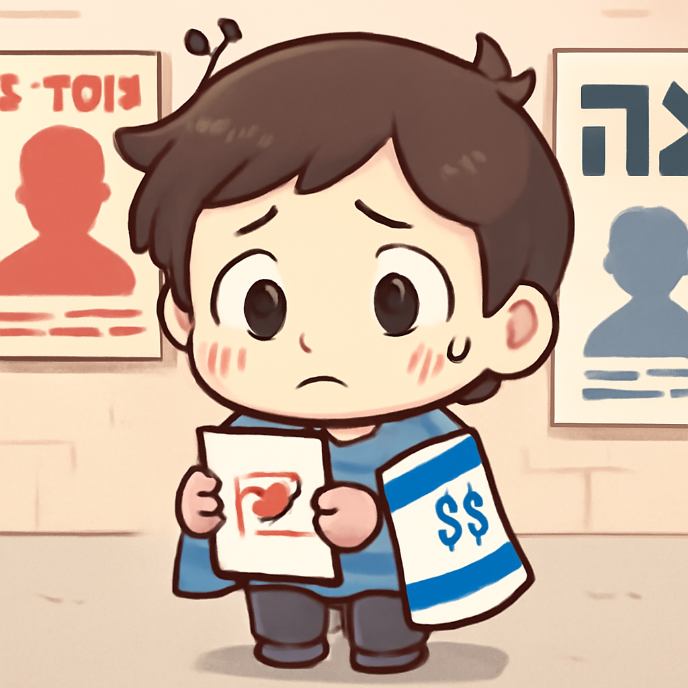
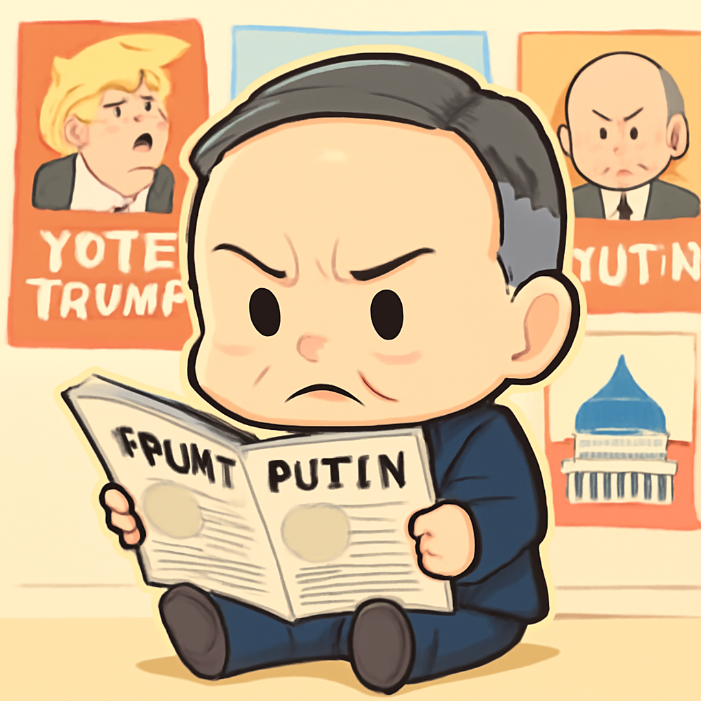

其一 · 烏克蘭基輔 · 俄羅斯導彈襲擊電廠
俄羅斯導彈襲擊烏克蘭基輔電廠，造成重大損失。

在烏克蘭基輔，俄羅斯於近日發動導彈襲擊，目標是當地的電力設施，導致電力供應受損。烏克蘭總統澤連斯基表示，這次襲擊沒有提前警告，讓人措手不及。在寒冷的冬季，大家可想而知電力短缺的影響有多大。
🔗 原始新聞 ↗
2026-10-14 · 以古觀今，以笑抗愁
俄羅斯導彈襲擊烏克蘭基輔電廠，造成重大損失。

在烏克蘭基輔，俄羅斯於近日發動導彈襲擊，目標是當地的電力設施，導致電力供應受損。烏克蘭總統澤連斯基表示，這次襲擊沒有提前警告，讓人措手不及。在寒冷的冬季，大家可想而知電力短缺的影響有多大。
🔗 原始新聞 ↗
MI5首席警告英國面臨來自俄羅斯和伊朗的雙重威脅。

英國倫敦，MI5首席肯·麥考倫發表警告，指出來自俄羅斯和伊朗的威脅正在上升，特別是針對英國的恐怖主義和國家安全問題。他表示，這些威脅的規模已經與恐怖活動相當，讓人擔心未來的安全情況。看來，這年頭，安全問題變得越來越複雜，真是令人不安啊！
🔗 原始新聞 ↗
德國法院將審理一名烏克蘭人涉嫌炸毀北溪管道的案件。
在德國柏林，烏克蘭人塞爾希·K因涉嫌策劃炸毀北溪天然氣管道而被起訴，這起事件發生在四年前，現在終於要進入法庭審理。這個案件的意義重大，因為它涉及到歐洲的能源安全以及俄烏戰爭的持續影響。希望法庭能公正判決，不要讓人等太久。
🔗 原始新聞 ↗
以色列即將舉行選舉，民眾對政府的評價分歧嚴重。

在以色列耶路撒冷，民眾即將投票，這是自哈馬斯襲擊以來的首次選舉。民眾對總理內塔尼亞胡的責任歸屬存在激烈爭論，部分人認為他失職，另一些人則指責軍方的“叛國行為”。這場選舉可說是充滿火藥味，讓人好奇結果會如何影響以色列的未來。
🔗 原始新聞 ↗
特朗普被指控與普京達成協議，對烏克蘭局勢造成影響。

在美國華盛頓，前國務卿蓬佩奧指出，特朗普的行為似乎使得普京獲得了好處，而這正是烏克蘭目前面臨困境的原因之一。這項指控引發了美國和國際社會的廣泛關注，大家都在思考政治與國際關係的微妙平衡。看來，政治愛好者又要忙著解讀這些紛繁複雜的關係了！
🔗 原始新聞 ↗